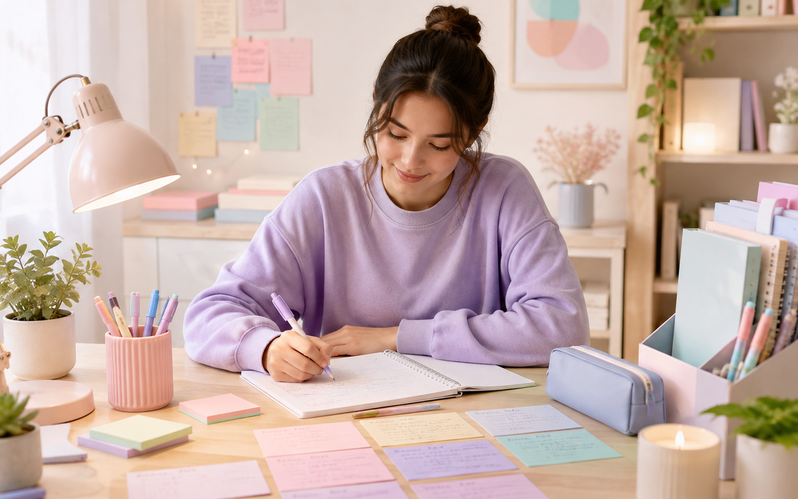
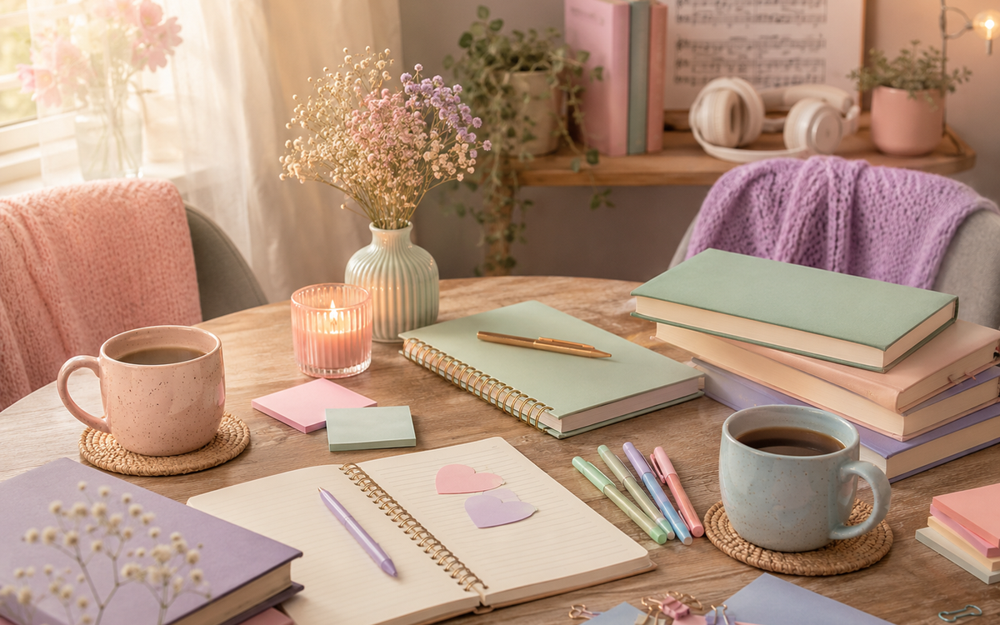
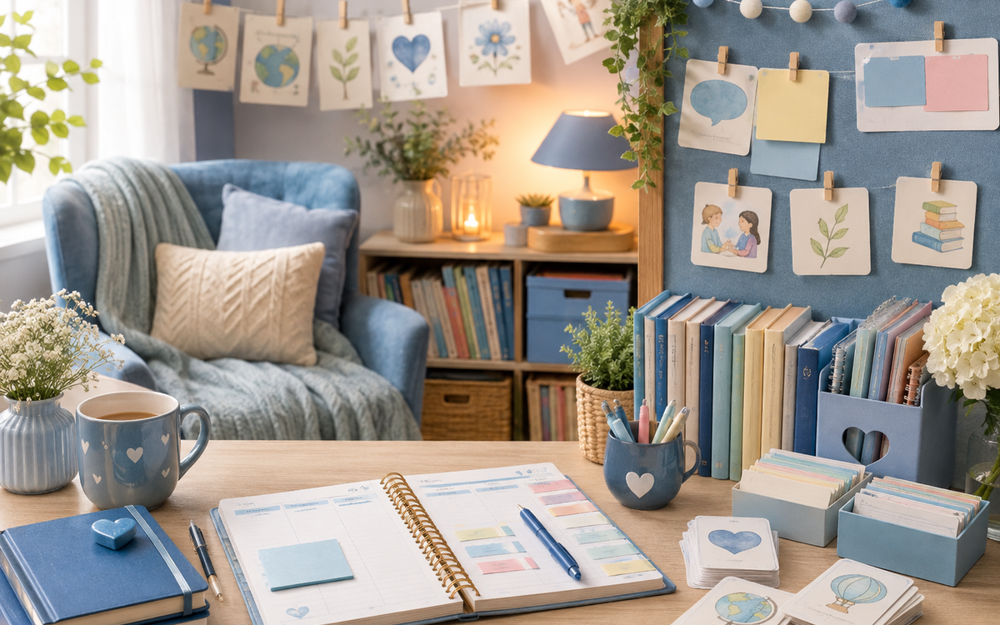

The StudyBase
Study here. Succeed everywhere.
Study here. Succeed everywhere.
THE PEOPLE BEHIND THE STUDYBASE
Our story started when we were just six years old — and eventually, all those years of friendship led us here.
Join The StudyBase Contact Us
Two friends. One shared dream.
Our story started when we were just six years old.
Since then, we have grown up together, followed completely different academic paths, built careers, got married, started families, faced some incredibly difficult seasons and celebrated some beautiful ones too.
Through all of it, somehow our paths kept leading us back to one another.
And eventually, they led us here.
To The StudyBase.

This dream may belong to the two of us, but we definitely haven't built it alone. Our husbands have supported us through the ideas, the planning, the late nights, the stress, the excitement and probably more StudyBase conversations than they ever expected! 😄
And standing right beside them are our families — encouraging us, believing in us and supporting this dream every step of the way.
The StudyBase really is something built with a whole lot of love behind it.

Hi! I'm Mrs C.
Teaching has always been where my heart is.
I completed my Bachelor of Education degree spesialising in Educational Psychology, and I have now been a teacher for six years.
During those years, I have had the privilege of working with so many different children — different personalities, different strengths, different struggles and, most importantly, different ways of learning.
One of the areas closest to my heart is working with children who have additional or special learning needs, including learners with ADHD, dyslexia, OCD and other learning challenges.
I strongly believe that a child who learns differently should never be made to feel incapable.
Sometimes they simply need someone who is willing to find a different way to teach them.
Since becoming a mom myself, that belief has become even stronger.
I look at the children I teach and tutor and often think:
That is exactly how I want every learner at The StudyBase to be treated.
I'm incredibly driven, and once I've decided something matters to me, giving up isn't really an option!
My strengths are definitely languages, studying, organisation, planning and finding ways to make difficult work feel a little less overwhelming.
And a few completely non-academic facts about me?
I love blue, I adore dogs, I love swimming, and I may have just a tiny obsession with things being organised, clean and in their proper place...
Okay FINE.
Maybe slightly more than a tiny obsession. 😉😂
Hi! I’m Mrs T! 👋🏼
My academic journey has been a long one. I spent 7 years studying towards my degrees, eventually completing my Master’s degree in Clinical & Experimental Pharmacology. 🎓
I’ve always loved learning, especially when I’m faced with something challenging. Give me a difficult topic and I’ll happily dig deeper, work through it and keep going until it finally makes sense! 🧠✨ I’m definitely someone who believes that hard work pays off.
While academics are a big part of who I am, there’s much more to me too!
🏃♀️ I’m currently training for long-distance running
🐴 I have a horse riding background and competed in show jumping, resulting in 2 broken shoulders but still a passive passion for it
💪🏼 I love challenging myself and pushing beyond what I thought I could do
🐶 I absolutely ADORE my dogs and my favourite day out is taking them to the dam
❤️ And I treasure spending time with my close friends and family
I believe that learning isn’t about being naturally “good” at something. It’s about patience, persistence and having someone who believes in you along the way.
I’m so excited to bring my love for learning, determination and a little bit of my own personality into every tutoring session
The StudyBase was never meant to be just another tutoring centre.
We wanted to create something more personal.
A place where learning goes beyond textbooks and test marks.
A place where we don't expect every learner to fit into exactly the same box.
A place where we meet children where they are, figure out how they learn best and help them move forward from there.
We celebrate all of them.
Because every little step matters.
Grades 4–12 | Northmead, Benoni
Register Today Contact Us